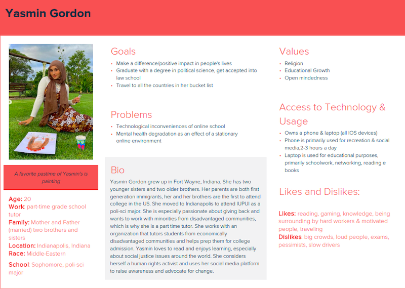
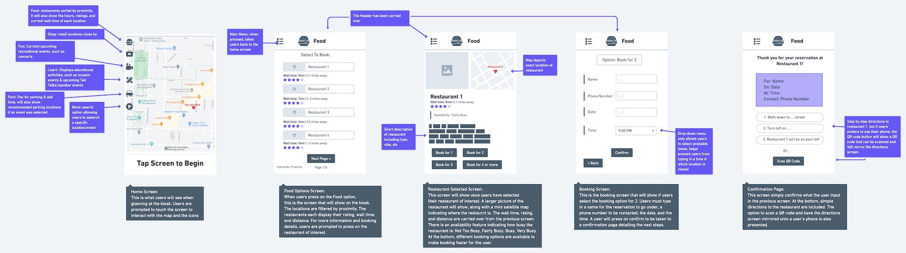
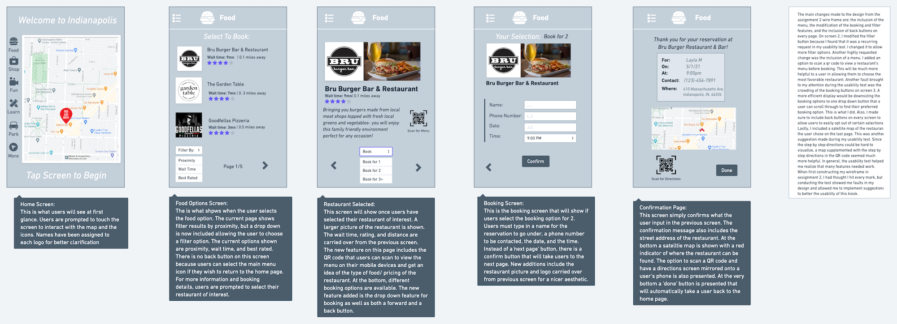

1. Personas & Scenerios 
2. Low Fidelity Wireframe 
3. Heuristic Analysis
| Users | Suggestions/Feedback |
|---|---|
| User 1 |
|
| User 2 |
|
| User 3 |
|
5. Final UI 
The tourism kiosk is an information kiosk meant for both non-residents and
residents of Indianapolis. The purpose of the kiosk is to supply information on main attractions,
events, recreational activities, and places to eat in the surrounding area. Users will be able to perform
tasks such as making reservations for certain events, paying for parking/adding time, and finding out key information about attractions and events.
This user persona was created after interviewing a total of five students attending
different universities. The primary demographic was female and middle eastern between the ages of 19 and 30, all of whom are full time students
with a job. One of the main recurring values/goals observed was education and being successful. All of them
personally own at least a mobile device and a laptop, making them well versed with technology.
Some of the main dislikes were unmotivated people, pessimists and large crowds. The user persona I created embodies
most of these characteristics and lives on campus.
This wireframe takes a user through the task of booking a restaurant. A total of five screens are displayed,
beginning with the home screen and ending with the confirmation screen. Screen 2 displays the restaurant options filtered by proximity. The third screen displays
restaurant details and booking information. Screen 4 is where a user enters their contact information to confirm the reservation and screen 5 is the
confirmation screen.
Kisok Wireframe 1
This heuristic evaluation was conducted on the Personal and Business Car leasing website,
LINGsCARS. This website is a car leasing website based in the U.K. Its purpose is to advertise
its leasing business and inspire users to lease cars with their company. I used Nielson’s ten
heuristics to perform this evaluation.
These are the results of the usability test for the toursim kiosk. The
reason for the test is to measure the kiosk's success rate and find the strengths and weaknesses
in my initial design. Two of the participants were students ages 19 and 20 and were both familiar with
online booking services. The third participant was 55 and has never reserved online before. I believe
that because the testers ranged from experienced to inexperienced,it has helped generate better feedback.
Full Usability Testing Script
This is the final UI of the tourism kiosk. The main changes made to the design
from the low fidelity wire frame are: the inclusion of the menu, the modification of the booking
and filter features, and the inclusion of back buttons on every page.
Final UI